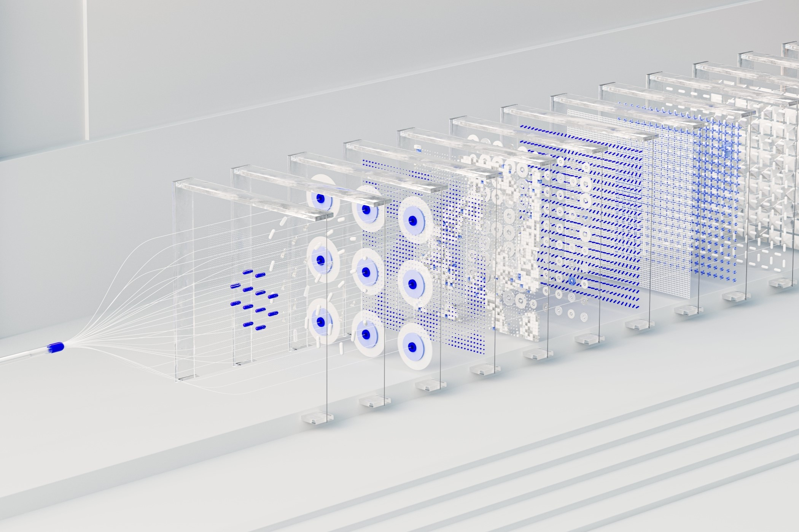

A Few Of My Latest Projects

Differential Proteomics and ML Analysis of Alzheimer's Disease
Proteomics analysis of the PXD016278 Alzheimer's Disease cohort (from PRIDE) with differential abundance testing and ML classifiers
- Python
- Machine Learning
- Bioinformatics
- Statistical Analysis
- Classification
- Biomedical Data
Exploring User Accessibility and Human-Machine Interaction using EMG
Using EMG signals to help classify gestures and use it as a means of biometric identification and authentication
- Python
- Deep Learning
- Machine Learning
- PyTorch
- Time Series Analysis
- Computer Vision
- Signal Processing
The Song Search
An Information Retrieval System for songs, as inspired by Shazam
- Python
- Deep Learning
- TensorFlow
- TensorFlow Magenta
- Audio Processing
- Music
- Information Retrieval

Project link
Deep Clustering for Unsupervised Learning of Visual Features - A Reproduction
Helping cluster unlabelled data using a DeepCluster network with AlexNet and k-means Clustering
- Python
- Deep Learning
- Unsupervised Machine Learning
- PyTorch
- OpenCV
- Computer Vision
- Clustering
Facial Emotion Recognition
Detect facial emotions from static 2-D images using Traditional Machine Learning and Deep Learning models
- Python
- Supervised Machine Learning
- Deep Learning
- PyTorch
- Computer Vision
- Predictive Modeling
A Literature Review on BERT, RoBERTa, and T5
Comparing common attention models in deeper detail
- Deep Learning
- Research
- Literature Review
- Natural Language Processing
Cryptocurrency Price Prediction
Forecasting closing price of cryptocurrencies
- Python
- Supervised Machine Learning
- Data Analysis
- Data Interpretation
- Data Visualization
- Time-Series Modeling
Optimizing Route for Single-Source Ridesharing Services
Optimization of cost, seating capacity, and route for rideshare services
- Python
- Algorithms
- Depth-First Search
- Breadth-First Search